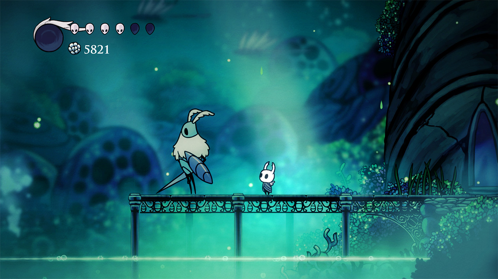
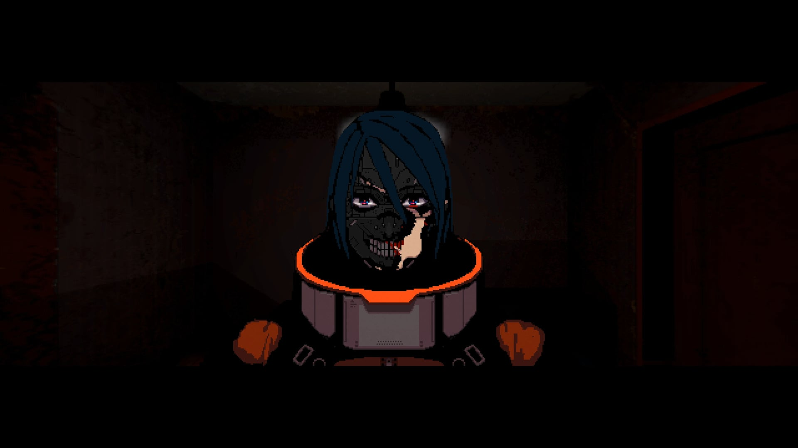

О
ПРОЕКТЕ
Dark Machine — пиксельная метроидвания в жанре action-adventure, разрабатываемая на движке Godot 4. Действие разворачивается в мрачном постапокалиптическом мире далёкого будущего, где цивилизация машин полностью вытеснила людей.
Весь игровой мир — один гигантский завод, созданный роботами для производства себе подобных. Люди здесь — лишь расходный материал: их выращивают в капсулах, используют для опытов и уничтожают.
Главный герой — один из таких людей. Из-за критического сбоя в системе его капсула выходит из строя раньше срока, давая ему неожиданный шанс выжить и сбежать. Мир вокруг враждебен — каждая машина запрограммирована на уничтожение нарушителей.
Ключевая механика игры — выбор между двумя взаимоисключающими путями развития: Мусорщик и Киборг. Оба пути позволяют преодолевать одни и те же препятствия, но принципиально разными способами, создавая уникальный игровой опыт.
В основе нарратива лежит философская концепция — парадокс корабля Тесея: если постепенно заменять каждую часть корабля новой, остаётся ли это тот же корабль? Применительно к игре: если человек заменяет части тела механизмами, остаётся ли он человеком?



